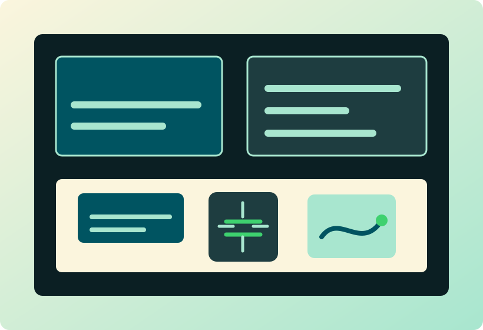

Tech Solutions for Connected, Intelligent Businesses
IoT, cloud, web, mobile, embedded systems, and edge AI solutions built for startups, businesses, and industries.
Engineering ideas into reliable technology systems.
Vortiq Dynamics helps businesses transform ideas into reliable technology systems, from connected devices to cloud platforms and intelligent applications.
- End-to-end development
- Engineering-first approach
- Scalable architecture
- Support from concept to deployment

From circuit boards to cloud platforms.
We connect hardware, firmware, IoT, cloud infrastructure, dashboards, mobile apps, and edge AI into complete working systems.
Inside the Vortiq R&D Lab.
A featured work-studio grid for real project photos: IoT hardware, DevOps/cloud operations, mobile UI, edge AI, and team-based integration.
Seven connected service lines, equally visible.
Every service is part of the same delivery chain: design, build, integrate, test, and support.
A practical process for real deployment.
Clear requirements, strong architecture, working prototypes, clean integration, and support after launch.
Modern tools across software, cloud, devices, and edge AI.
Tooling is selected around reliability, scalability, and the technical shape of your product.
Built for practical impact.
Representative examples of the kinds of systems Vortiq Dynamics can design and deliver.
Placeholder gallery now, real work images later.
These slots are built to accept future admin-managed images section by section.
Questions before you start?
Have a product, platform, or connected system to build?
Tell us what you are planning. We will help shape the right technical path from prototype to deployment.
Admin-ready media slots
When the admin layer is built later, these sections can receive uploaded images and content without redesigning the website.